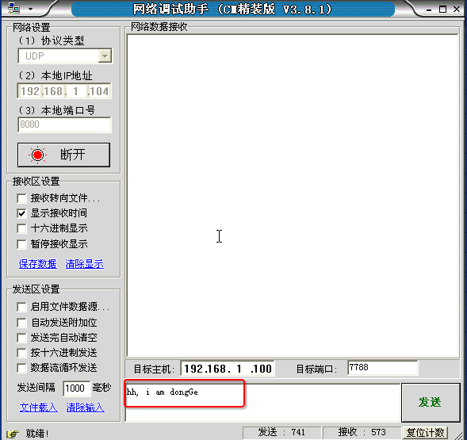

udp绑定信息
1. 绑定信息
还记得在上一节课中，如果一个网络程序在每次运行的时候端口是随机变化的么？
一般情况下，在一天电脑上运行的网络程序有很多，而各自用的端口号很多情况下不知道，为了不与其他的网络程序占用同一个端口号，往往在编程中，udp的端口号一般不绑定
但是如果需要做成一个服务器端的程序的话，是需要绑定的，想想看这又是为什么呢？
如果报警电话每天都在变，想必世界就会乱了，所以一般服务性的程序，往往需要一个固定的端口号，这就是所谓的端口绑定

2. 绑定示例
#coding=utf-8
from socket import *
#1. 创建套接字
udpSocket = socket(AF_INET, SOCK_DGRAM)
#2. 绑定本地的相关信息，如果一个网络程序不绑定，则系统会随机分配
bindAddr = ('', 7788) # ip地址和端口号，ip一般不用写，表示本机的任何一个ip
udpSocket.bind(bindAddr)
#3. 等待接收对方发送的数据
recvData = udpSocket.recvfrom(1024) # 1024表示本次接收的最大字节数
#4. 显示接收到的数据
print recvData
#5. 关闭套接字
udpSocket.close()
运行结果：
测试端

本程序

3. 总结
- 一个udp网络程序，可以不绑定，此时操作系统会随机进行分配一个端口，如果重新运行次程序端口可能会发生变化
- 一个udp网络程序，也可以绑定信息（ip地址，端口号），如果绑定成功，那么操作系统用这个端口号来进行区别收到的网络数据是否是此进程的